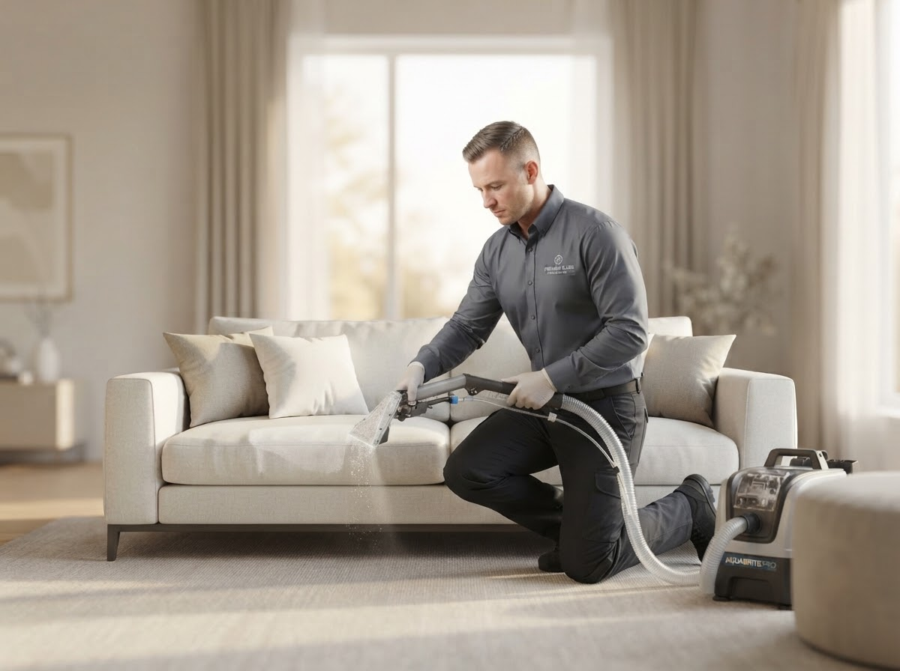
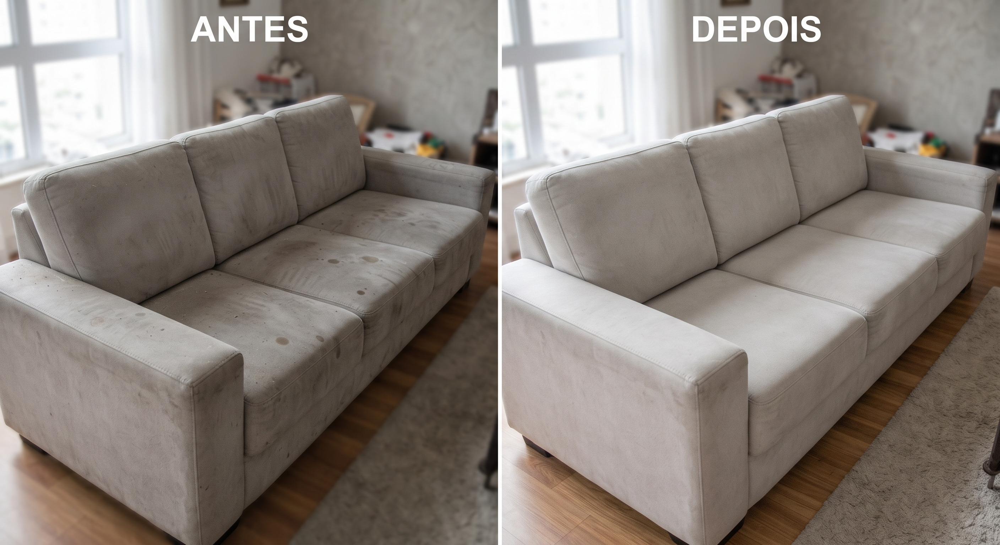
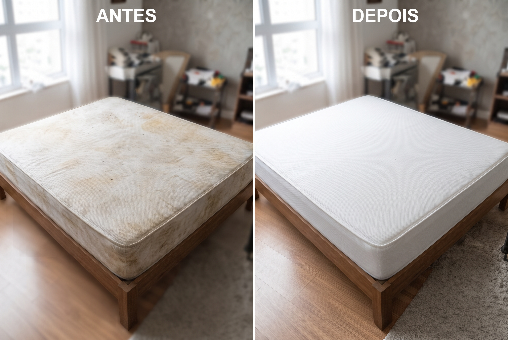
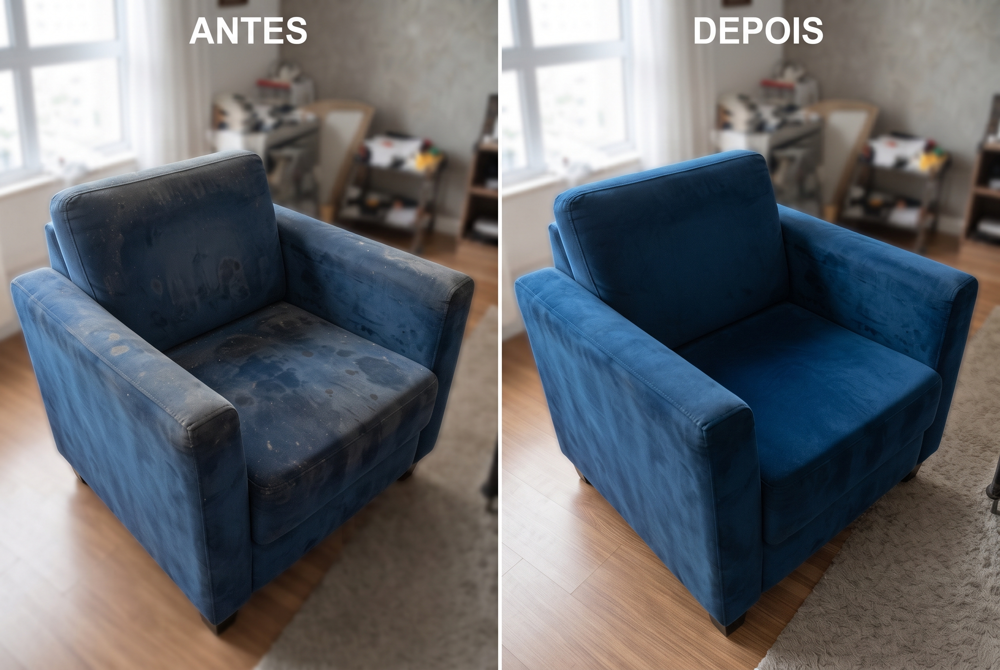
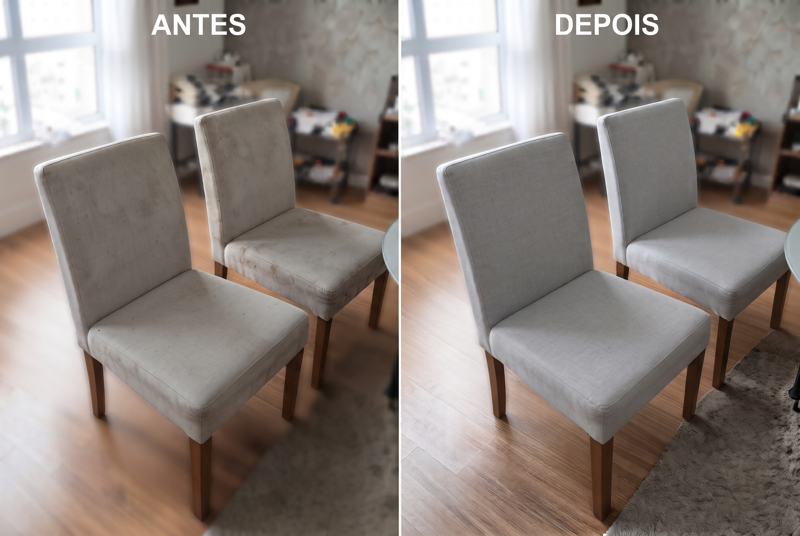
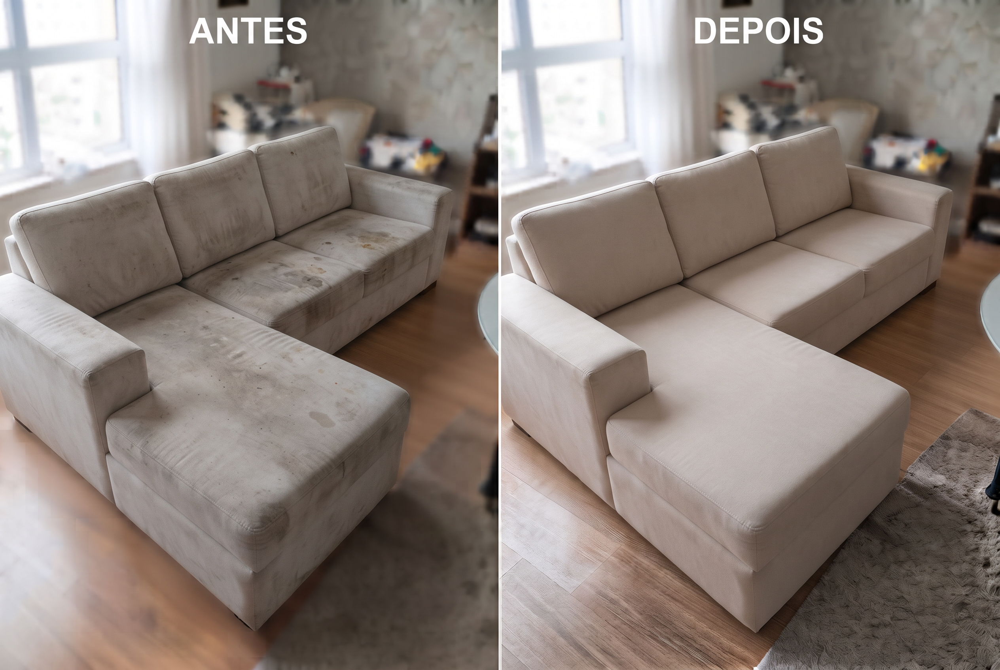

Higienização de Estofados
Limpeza profunda de sofás, colchões, cadeiras e estofados em geral. Removemos sujeiras, ácaros e odores com produtos adequados a cada tipo de tecido.
- Sofás e poltronas
- Colchões
- Cadeiras
Especialistas em higienização e impermeabilização de estofados. Cuidamos dos seus sofás, poltronas, cadeiras e colchões com produtos e técnicas profissionais para resultados que transformam.

Somos uma empresa especializada em higienização e impermeabilização de estofados. Trabalhamos com produtos de alta qualidade e técnicas profissionais para cuidar dos seus estofados.
Nosso compromisso é entregar cuidado completo com seus itens, prolongando sua vida útil e mantendo a aparência de novo.
Utilizamos produtos profissionais adequados a cada tipo de tecido
Serviço realizado com cuidado e dentro do prazo combinado
Cada estofado é tratado de acordo com suas condições específicas
Soluções profissionais para limpeza e conservação dos seus estofados
Limpeza profunda de sofás, colchões, cadeiras e estofados em geral. Removemos sujeiras, ácaros e odores com produtos adequados a cada tipo de tecido.
Proteção que cria uma barreira repelente contra líquidos e sujeira nos seus estofados. Ajuda a prevenir manchas futuras e facilita a limpeza.
Limpeza e higienização especializada para colchões, removendo ácaros, poeira e manchas. Importante para a saúde e bem-estar da sua família.
Higienização de poltronas, cadeiras de jantar e outros estofados. Restauramos a aparência e frescor dos seus móveis.
⚠️ Serviços listados sujeitos à confirmação pela empresa. Entre em contato para verificar disponibilidade na sua região.
A higienização profissional traz benefícios que vão além da aparência
Suas peças ficam com aspecto mais limpo e fresco, como novas. A limpeza profissional remove sujeiras acumuladas que a limpeza doméstica não alcança.
A higienização remove ácaros, poeira e microrganismos acumulados nos estofados, contribuindo para um ambiente mais saudável.
A limpeza regular e a impermeabilização ajudam a preservar os tecidos, prolongando a vida útil dos seus estofados.
A impermeabilização cria uma barreira repelente que facilita a remoção de líquidos e ajuda a prevenir manchas futuras.
Após o serviço, você recebe orientações sobre como conservar seu estofado e manter os resultados por mais tempo.
Cada estofado é tratado de acordo com suas condições específicas. Os resultados podem variar conforme o tipo de tecido e estado de conservação.
Veja a transformação que fazemos nos seus estofados





📸 RESULTADOS: Veja a transformação que fazemos nos seus estofados. Para mais exemplos, acompanhe nosso Instagram.
Acompanhe nossos trabalhos no Instagram para ver resultados reais:
@ghlavagensUm processo simples e transparente do início ao fim
Clique no botão de WhatsApp informando o tipo de estofado e o serviço desejado.
Informe o tipo de estofado (sofá, poltrona, colchão, cadeira) e descreva o que precisa. Respondemos com um orçamento personalizado.
Após confirmar o orçamento, combinamos os detalhes do serviço e definimos a melhor data para você.
Nossa equipe realiza o serviço conforme as condições acordadas, utilizando produtos adequados a cada tipo de tecido.
Após o serviço, você recebe orientações para manter o estofado limpo e protegido por mais tempo.
Depoimentos reais serão adicionados conforme forem sendo coletados.
Tire suas dúvidas sobre nossos serviços de higienização e impermeabilização
A higienização profissional utiliza produtos e equipamentos adequados para limpar profundamente o tecido do estofado. O processo remove sujeiras acumuladas, ácaros e odores. Os resultados variam conforme o tipo de tecido, estado de conservação e tipo de mancha.
Higienização é a limpeza profunda do estofado, removendo sujeiras e microrganismos. Impermeabilização é um tratamento aplicado após a limpeza que cria uma barreira repelente contra líquidos, ajudando a prevenir manchas futuras. A impermeabilização aumenta a repelência do tecido, mas não o torna completamente à prova d'água.
Atendemos diversos tipos de estofados: sofás (de tecido e couro), poltronas, cadeiras, colchões e outros estofados residenciais ou comerciais. Cada tipo de tecido requer produtos e técnicas específicas — entre em contato para verificar as condições do seu estofado.
Você pode solicitar um orçamento clicando no botão do WhatsApp disponível em qualquer parte do site. Basta informar o tipo de estofado e o serviço desejado.
Recomendamos remover objetos do cima do estofado e garantir acesso fácil à área. Nossa equipe cuida do restante. Orientações mais detalhadas serão fornecidas no momento do agendamento.
Após o serviço, você receberá orientações personalizadas para a conservação do seu estofado. De modo geral: evitar contato com líquidos, ventilar o ambiente, limpar manchas imediatamente com pano seco e realizar higienização profissional periodicamente.
Os resultados dependem do tipo de tecido, estado de conservação e tipo de mancha. Não garantimos remoção total de todas as manchas ou eliminação completa de microrganismos. Cada caso é avaliado individualmente — entre em contato para uma avaliação mais precisa.
Estamos prontos para atender você! Entre em contato e solicite seu orçamento sem compromisso.
Solicite agora seu orçamento gratuito pelo WhatsApp!
Chamar no WhatsApp